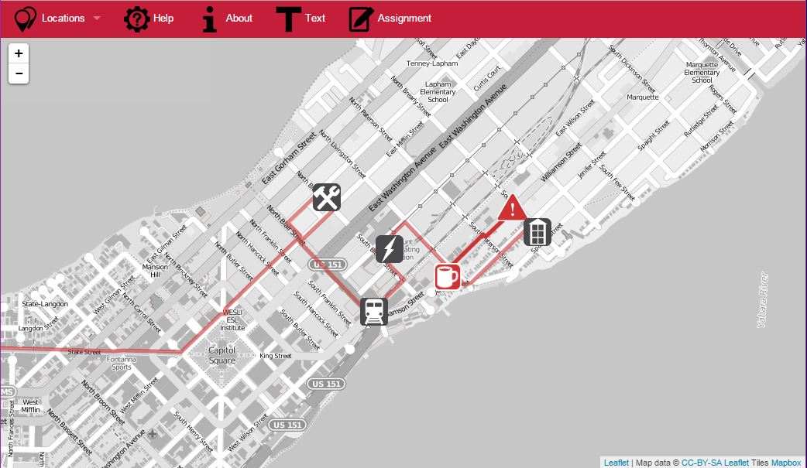
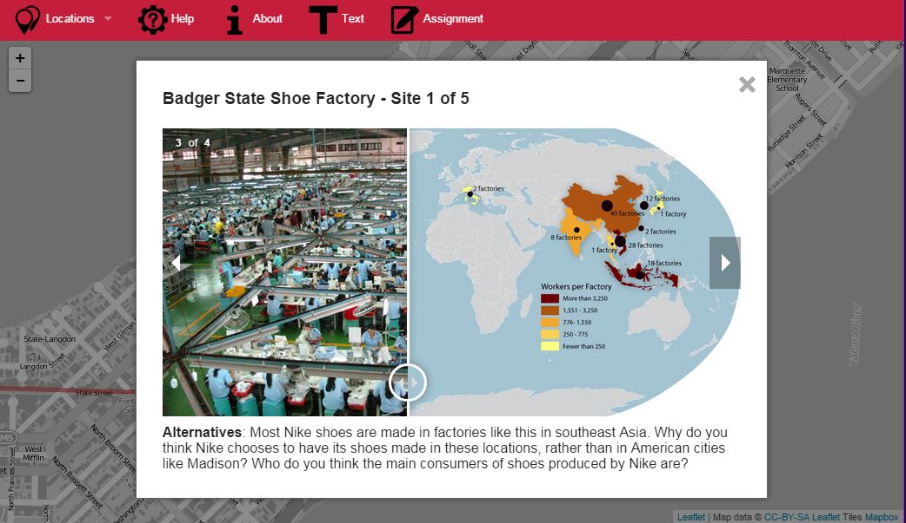
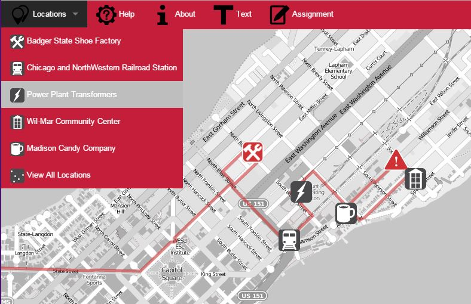
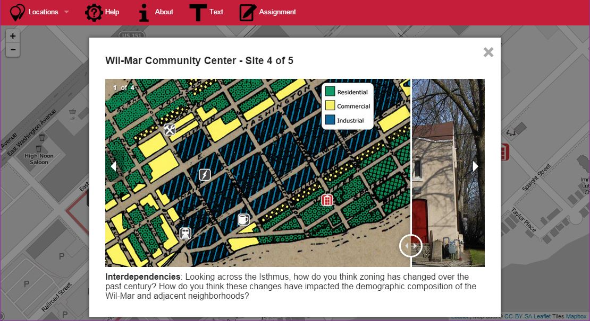

prev |
Global Madison |
next |
Global Madison is an interactive map designed for use by International Studies 101 students at UW-Madison. This was a collaborative project, built by students in a graduate-level mobile mapping seminar. The interactive application can be found at this link.



